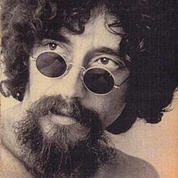
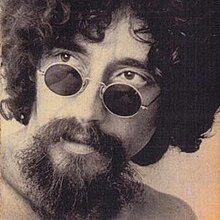

O rock and roll, também conhecido como rock & roll, rock'n'roll, é um gênero musical surgido nos Estados Unidos no final entre as décadas 1940 e 1950, com raízes nos estilos musicais norte-americanos, como: country, blues, R&B, e que rapidamente se espalhou para o resto do mundo.
O instrumento mais comum neste estilo é a guitarra, sempre presente nas bandas, podendo possuir um único instrumentista, ou dois com funções diferenciadas (guitarrista base e solo). Que além deste instrumento, as bandas são formadas por um: contrabaixo (após 1950, um baixo elétrico) e uma bateria. Nos primórdios do rock and roll, também se utilizava o piano ou o saxofone frequentemente como instrumentos bases, mas estes foram substituídos ou suplementados, geralmente, pela guitarra a partir da metade dos anos 1950.
A batida é essencialmente um blues com country com contratempo acentuado, este último quase fornecido por uma caixa-clara. A enorme popularidade e eventual visão no mundo inteiro do rock and roll deu-lhe um impacto social único. Muito além de ser simplesmente um gênero musical, como visto nos filmes e na televisão e de acordo com a mídia que se desenvolvia na época, influenciou estilos de vida, moda, atitudes e linguagem.
Sister Rosetta Tharpe, uma cantora gospel e guitarrista da década de 1920 chamada de "madrinha do rock", criou a base deste gênero e inspirou vários músicos famosos: Elvis Presley, B.B. King, Bob Dylan, Chuck Berry.
O pontapé inicial do rock no Brasil foi Nora Ney (conhecida cantora de samba-canção) quando gravou o considerado primeiro rock, Rock Around the Clock, de Bill Haley & His Comets (trilha do filme Sementes da Violência), em outubro de 1955, para a versão brasileira do filme. Em uma semana a canção já estava no topo das paradas (mas Nora Ney nunca mais gravou nada no gênero, tirando a irônica Cansei do Rock, em 1961). Em dezembro, a mesma canção recebia versão em português, Ronda das Horas (por Heleninha Silveira) e outra gravada pelo acordeonista Frontera, não tão bem sucedidas quanto a original. Em janeiro do ano seguinte, a canção ganhou uma versão por Marisa Gata Mansa.[4] Em 1957, Agostinho dos Santos, que gravou Até Logo, Jacaé, uma versão de See You Later, Alligator, outro sucesso de Haley.
Tim Maia, Roberto Carlos, Erasmo Carlos e Jorge Ben foram influenciados pelo rock and roll e rockabilly. Tim, Roberto, Arlênio Silva, Edson Trindade e Wellington integraram o grupo vocal The Sputniks. Tanto Tim quanto Jorge eram conhecidos como Babulina, por conta da pronuncia inusitada de Bop-A-Lena, interpretado por Ronnie Self. Ambos também foram influenciados por Little Richard, cujo estilo era fortemente influenciado pelo boogie woogie. Roberto Carlos aprendeu a batida do rock no violão ao ver Tim executar Long Tall Sally, de Little Richard. O grupo The Sputniks foi desfeito após Tim descobrir que Roberto iria se apresentar como o Elvis Presley brasileiro no programa o Clube do Rock de Carlos Imperial. Tim convenceu Imperial a se apresentar como o Little Richard brasileiro. Conhecendo Tim desde a infância, Erasmo integrou o grupo The Snakes, grupo criado após o fim do The Sputniks, com Arlênio, China e Edson Trindade.

 
